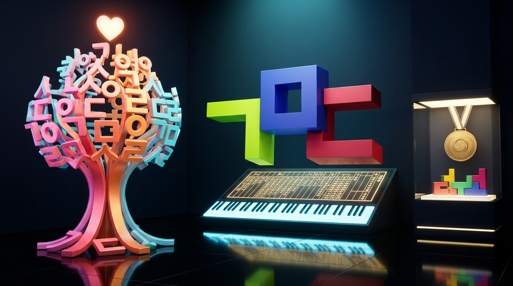
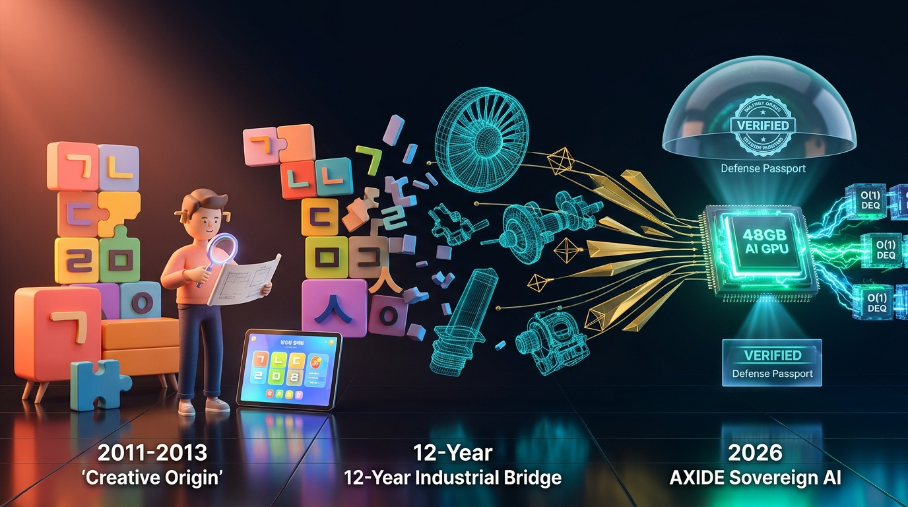
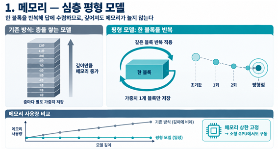
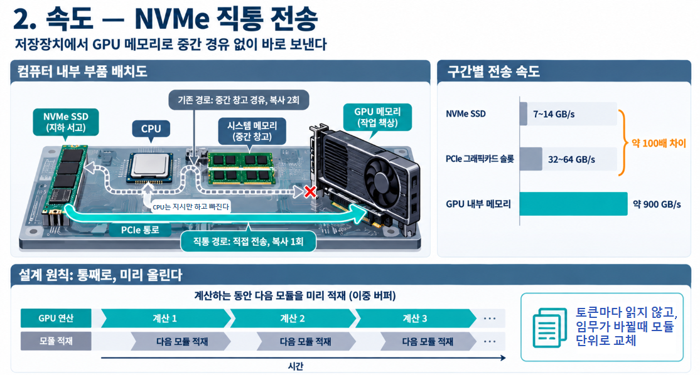
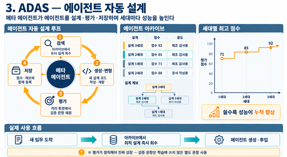
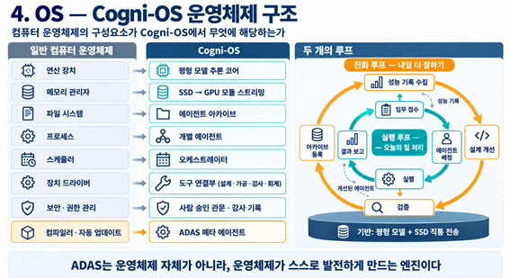

2011년 문화체육관광부장관 표창을 받은 ‘한글 자·모 모듈 결합 가구’에서 항공정비 교육훈련 3D 시스템 개발 12년, 그리고 카너먼의 두 개의 두뇌(System 1 · System 2) 박사학위논문까지.
15년간 흩어져 있던 삶의 조각들이 ‘AXIDE(천체가 회전하는 중심축)’라는 이름 아래 대한민국 제조업의 폐쇄망 AI 운영체계 Cogni-OS와 방산 부품 여권으로 맞춰진 이야기를 공개합니다.
“도면은 공장 밖으로 나가지 않고,
부품은 여권을 들고 올라옵니다.”
Cogni-OS는 “도면만 넣으면 분석·감수, 3D 모델링, 정밀 가공 데이터까지 이어 주는 공장용 AI 운영체계”입니다. 인터넷 연결 없이 GPU 한 장짜리 서버에서 돌아가며, 모든 과정이 위·변조할 수 없는 암호학적 기록으로 남습니다.
 🔍 원본 고해상도 벡터 도면 확대 보기
🔍 원본 고해상도 벡터 도면 확대 보기
도면은 공장 안에 봉인되고, 부품만 암호화 여권(VERIFIED)을 들고 원청으로 올라갑니다
클라우드 연결이 원천 차단된 에어갭(폐쇄망) 정밀가공 공장 내부에서 도면 판독·3D 모델링·가공·측정이 완결되며, 입고 시 원청 품질·보안팀은 협력사 내부망을 들여다보지 않고도 부품 여권 하나로 “이 부품이 정본 도면대로, 유출 없이 가공되었다”는 사실을 즉시 검증합니다.
⚡ Cogni-OS 현장 5단계 작동 흐름 (스마트글라스 음성 질의 + 산업용 태블릿 결과 확인)
※ 현재 ①~③과 ⑤ 상용 구현 완료 · ④ 가공 장비 연동은 금산 330평 테스트베드에서 확장 중2D / 3D 도면 입력
폐쇄망 서버에 2D 기계제도 도면(DXF·PDF) 및 3D 원본 도면을 외부 반출 없이 로컬 투입합니다.
형상·치수·공차 분석
AI가 기하공차·치수·누락 요소를 결정론적으로 분석하고 설계 감수 의견을 즉시 제시합니다.
STEP / STL 자동 생성·편집
도면을 바탕으로 3D 정밀 모델(STEP·STL)과 단면도를 자동 생성·편집해 태블릿과 글라스에 띄웁니다.
CNC · 금속 3D 프린팅 연결
검증된 3D 형상을 CNC 가공 경로(G-code) 및 금속 적층제조(AM) 슬라이서 데이터로 직결합니다.
전 과정 Tech-Audit 봉인
어떤 도면에 어떤 모델이 어떤 답을 냈는지 Ed25519 전자서명과 SHA-256 해시 체인으로 봉인합니다.
군 정비훈련장비 12년의 모순에서 찾은 해답 15년 전 ‘한글 퍼즐 가구’의 조합 원리와 ‘두 개의 두뇌(System 1·2)’ 박사논문의 결합
문화체육관광부장관 표창을 받은 한글 모듈 디자인(2011~2012), 항공정비 교육훈련 3D 시스템 개발 12년, 그리고 충북대 산업인공지능학과 박사과정 연구가 만나 ‘가중치 모듈 결합’과 ‘이중 프로세스 증류’라는 AXIDE만의 독창적 아키텍처로 완성되었습니다.
① 모순의 발견: 가장 정밀한 현장일수록 AI를 쓸 수 없는 역설
군 정비훈련장비(KUH-1 수리온 등)를 12년간 개발하며 다룬 도면과 교범은 군사 보안상 외부 반출이 불가능했고, 모든 시스템은 인터넷이 차단된 폐쇄망 안에서만 작동해야 했습니다.
그러나 기존 AI는 클라우드 연결이나 수천만 원대 대형 GPU 클러스터를 요구했습니다. 방산 협력사·정밀가공 공장·금융기관처럼 보안이 생명인 현장일수록 정작 AI를 도입할 수 없는 모순이었습니다.
“AI를 밖에서 빌려 쓰지 말고, 조각내고 증류해서 공장 안으로 들여보내자.”
허상훈 대표 · AXIDE 창업의 출발점② 한글 모듈 가구(2011)와 박사논문 ‘두 개의 두뇌’의 결합
해답은 2011년 홍익대 석사논문이자 2012년 문체부장관 표창작인 ‘한글 자·모 모듈 결합 가구’에 있었습니다. 한글이 28개 자·모 조각의 조합으로 모든 글자를 표현하듯, 거대 AI 모델도 모듈 단위로 분할해 필요한 조각만 실시간 결합하면 단일 GPU에서도 구동할 수 있다는 원리입니다.
여기에 노벨상 수상자 카너먼의 이중 프로세스 이론(System 1 · System 2)을 다중 에이전트 증류로 구현한 박사논문을 결합해, 소형 폐쇄망 장비에서도 숙련 엔지니어 수준의 정밀 판독이 가능하도록 설계했습니다.
 LIVE MOTION · 15-YEAR STREAM
🔍 스토리 아트워크 확대
LIVE MOTION · 15-YEAR STREAM
🔍 스토리 아트워크 확대
한글 모듈 가구(2011) → 항공정비 3D 시스템(12년) → AI 모듈 스트리밍(2026)
한글 블록의 조립 원리가 12년간의 항공정비 3D 도면 엔지니어링을 거쳐, 단일 GPU 안에서 가중치 모듈을 실시간 결합하는 Cogni-OS 아키텍처로 완성되었습니다.


📌 연구실에서 첫 계약금 입금까지 · 창업 준비 및 실증 타임라인
박사과정에서 핵심 기술을 연구하며 2025년 7월 1일 ‘모두이룸’을 개업하고, 2026년 6월 1일 등록특허 제10-2973709호 등록 및 PCT 국제출원, 기술보증기금 기술임치를 완료했습니다.
대전 일대 제조기업 약 50곳에 직접 전화하고 찾아다닌 끝에 정밀가공 기업 아주산업과 1억 1천만 원 공급계약을 맺고, 10월 29일 첫 계약금 1,000만 원이 선입금되었습니다.
모두의 창업 시제품(MVP) 검수 100% 통과 및 3라운드 진출에 이어, 2027년 1월 설립 법인명을 AXIDE(액사이드)로 확정하고 인근 공장 2곳(LOI 8곳 중)과 11월 추가 계약을 진행 중입니다.
세종대왕의 조합 원리에서 시작된 AI 모듈 스트리밍 허상훈 ‘한글사랑’ 대표 시절(2011~2013) 방송 보도 및 광화문 전시 아카이브
2011년 홍익대 석사논문에서 출발해 광화문광장·코엑스 전시(누적 19,000+명 관람), KBS·MBC 9시 뉴스 등 11대 언론 보도, 그리고 문화체육관광부 장관상 수상으로 이어진 실제 방송 영상 2편과 공식 아카이브(cafe.naver.com/hansahun) 기록입니다.
2011~2015년 광화문광장 전시 결과보고서, 세종문화회관 공연, 한글IT문화체험 및 장관상 원본 기록 수록
한글사랑 공식 카페(hansahun) 바로가기 ↗🎬 2012·2013년 한글사랑 대표 방송 보도 및 전시 현장 영상
2012 제566돌 한글날 광화문 전시 & KTV 특집 방송 인터뷰
문화체육관광부 후원으로 광화문광장과 세종이야기에서 열린 전시 원본 영상입니다. 한글 28자·모 블록 조립 시연, ‘뿌리깊은 한글나무’, 세종문화회관 야외무대 피아노 공연 현장이 수록되어 있습니다.
2013 채널IT 『스마트 쇼!』 생방송 & 한글IT문화체험
채널IT 생방송 『스마트 쇼!』에서 집중 취재한 ‘한글IT문화체험’ 현장 영상입니다. 스마트패드 기반 한글 기능성 게임과 한글 음계·세종악보·조형미술을 통합해 문체부 장관상 수상으로 이어진 기록입니다.
🎨 3D 아트워크로 재탄생한 ‘한글창조융합’과 Cogni-OS의 연결고리

LIVE 3D · HANGUL CONVERGENCE 🔍 3D 아트워크 확대뿌리깊은 한글나무 · 3D 공간조형(ㄱ·ㄷ·ㅁ) · 세종악보 피아노 & 문체부 장관상
한글사랑 대표 시절의 3대 창작물인 뿌리깊은 한글나무, 3차원 공간조형(ㄱ·ㄷ·ㅁ) 및 세종악보 피아노 건반, 문화체육관광부 장관상 메달을 다크테크 뮤지엄 공간 안에 재구성한 3D 아트워크입니다.

LIVE 3D · 2011 ➔ 2026 BRIDGE 🔍 3D 아트워크 확대한글 자·모 모듈(2011)에서 항공 3D CAD를 거쳐 Cogni-OS(2026)로
28개 한글 자·모 블록과 스마트IT 게임(좌측)이 12년간의 항공정비 3D CAD 엔지니어링(중앙)을 거쳐, 단일 GPU 기반 O(1) DEQ 추론 및 방산 부품 여권을 발급하는 AXIDE Cogni-OS(우측)로 진화한 15년의 궤적입니다.
한글 퍼즐과 이중 프로세스에서 탄생한 4대 핵심 기술 단일 GPU 폐쇄망 환경에서 거대 모델의 지능과 속도를 구현하는 6계층 에이전트 운영체제
외부 인터넷이 차단된 폐쇄망의 단일 GPU(32GB/48GB VRAM) 환경에서도 거대 모델의 추론 성능을 구현하기 위해 ① 심층 평형(DEQ) 사고 엔진, ② NVMe 직통 가중치 스트리밍, ③ 자율 설계 에이전트 아카이브(ADAS), ④ 이중 프로세스(System 1·2) 루프를 결합했습니다.

🔍 원본 도해 확대① 평형(DEQ) 사고 엔진: 메모리를 늘리지 않는 심층 추론
층을 쌓을수록 메모리가 폭증하는 기존 딥러닝과 달리, 단일 블록을 반복 적용해 답이 수렴하는 ‘고정점(z*)’을 탐색하여 메모리 사용량을 상수(O(1))로 고정합니다.

🔍 원본 도해 확대② 예측형 가중치 모듈 스트리밍: 공간과 속도의 동시 해결
모델 가중치를 모듈 단위로 분할해 NVMe SSD에 보관하고, 다음 연산에 필요한 모듈을 예측해 시스템 RAM 경유 없이 PCIe 직통 경로로 GPU VRAM에 이중 버퍼로 선적재합니다.

🔍 원본 도해 확대③ 자율 설계 에이전트 아카이브: 스스로 조합하고 진화하는 지능
메타 에이전트가 하위 작업 모듈을 검색 → 생성·변형 → 격리 검증 → 아카이브 저장하며 세대마다 성능을 높입니다(71점 → 85점 → 92점). 새 임무 발생 시 최적 모듈을 즉시 조합해 대응합니다.

🔍 원본 도해 확대④ 이중 프로세스 운영체제 구조: 실행 루프(오늘)와 진화 루프(내일)
치수·공차처럼 즉답이 필요한 작업은 빠른 System 1이 처리하고, 불확실한 질의는 느린 System 2(심층 검토 및 판단 보류 후 사람 확인)로 이관합니다. 확정된 판단은 지식 증류를 거쳐 다음 날 빠른 두뇌의 지능이 됩니다.
 🔍 전체 시스템 아키텍처 벡터 도면 확대
🔍 전체 시스템 아키텍처 벡터 도면 확대
5. Cogni-OS 6계층 에이전트 운영체제 및 기업 간 공급망 연동 아키텍처
원청과 협력사 간 6단계 공급망 루프(견적·발주·수주·부품 여권 납품·검수)와 공장 내부 Cogni-OS 6계층(메모리 연산·도구 연결·에이전트 실행·오케스트레이터·ADAS 진화·인터페이스), 그리고 전 계층 승인 관문과 CNC·3D 측정기 현장을 하나로 통합한 표준 청사진입니다.
- • 1계층: 중간 창고(RAM) 경유 없는 SSD→GPU 직통 선반입
- • 3계층: 장비 제어·출하·청구 단계 필수 사람 승인(🔒)
- • 5계층: 학습 문항과 분리된 별도 검증 문항 평가기
- • 산출물: 도면 버전·설계 해시·소재 로트·공정·검사 봉인 여권
공장 안의 봉인을 공급망 전체의 신뢰로 확장하다 ‘방산 부품 여권(Part Passport)’과 폐쇄망 전용 AI 장비 수익 모델
2026년 12월 시행되는 개정 방위산업기술 보호법으로 기술 유출 처벌이 대폭 강화된 지금, 원본 도면을 외부로 반출하지 않고도 정밀 제조 무결성을 입증하는 Cogni-OS의 암호학 봉인은 원청과 협력사 모두의 법적·기술적 방패가 됩니다.
 🔍 부품 여권 벡터 도해 확대
🔍 부품 여권 벡터 도해 확대
방산 부품 여권(Part Passport): 도면 반출 없는 무결성 증명
2차 가공사와 1차 협력사의 가공·측정·조립 기록을 암호학 해시 체인으로 묶어 ‘부품 여권’을 발급합니다. 원청 품질·보안팀은 입고 시 여권(도면 지문·모델 기록·측정값·전자서명)만으로 정본 도면 준수 여부를 3초 만에 검증합니다.
 🔍 하드웨어 키 봉인 도해 확대
🔍 하드웨어 키 봉인 도해 확대
데이터 외부 유출 ZERO: 인터넷 없이 작동하는 폐쇄망 전용 AI 장비
서버·태블릿·스마트글라스·보안 동글을 통합 세트로 납품(초기 도입 CAPEX)하고, 2년차부터 모델 갱신·유지관리 구독료(OPEX) 및 원청 대상 여권 검증 노드 구독료를 결합한 3중 수익 모델입니다.
 LIVE 3D · ALL-IN-ONE HARDWARE VAULT
🔍 3D 하드웨어 구성도 확대
LIVE 3D · ALL-IN-ONE HARDWARE VAULT
🔍 3D 하드웨어 구성도 확대
단일 워크스테이션으로 수억 원대 클러스터의 한계를 넘는 올인원 구성
단일 Cogni-OS 워크스테이션(RTX 6000 Ada)에 관리자용 모니터, 현장 러기드 태블릿(±0.1mm 공차 가이드), 핸즈프리 AR 스마트글라스를 직결해 공장 전체를 하나의 폐쇄망 지능으로 연결합니다.
 🔍 마스터 브로셔 전체 확대
🔍 마스터 브로셔 전체 확대
폐쇄망 로그인 → 3D 도면 분석 → 현장 기기 전송 → Tech-Audit 감사 봉인
3D STEP 도면의 응력 분포와 최적 절삭 조건을 도출해 현장 태블릿·스마트글라스로 전송하고, 모든 추론 궤적을 Ed25519-SHA256 전자서명으로 봉인합니다.
🏆 AXIDE 창업 아이템의 5대 핵심 차별점
첫째, ‘공간과 속도’를 단일 GPU로 해결했습니다. SSD 직통 모듈 스트리밍과 이중 프로세스 지식 증류를 결합해 인터넷 연결 없이 32GB/48GB 단일 GPU에서 작동합니다.
둘째, 도면부터 부품까지 책임지는 ‘제조 전용 운영체계’입니다. 단순 질의응답을 넘어 도면 감수, 3D 모델링, 정밀 가공 데이터 생성까지 현장의 실무를 완결합니다.
셋째, 답이 아니라 ‘증명’을 제공합니다. 불확실할 때는 환각 대신 ‘판단 보류’를 선언하고, 전 과정을 암호학적으로 봉인해 법적 리스크를 차단합니다.
넷째, 이미 현장 계약과 매출로 검증되었습니다. 아주산업 1.1억 원 공급계약 체결 및 계약금 입금을 완료했으며, 인접 제조사들과 후속 계약을 진행 중입니다.
다섯째, 15년간 축적된 독보적 도메인 자산이 있습니다. 문체부장관 표창 모듈 설계, 12년 항공정비 3D 시스템, 산업AI 박사 연구와 KAIST 박사 CTO의 검증 체계가 결합되었습니다.
방위사업청 기술보호체계 구축 지원사업(50~80%) 연계 제안
방위사업청은 방산 중소·중견기업과 협력업체의 기술보호체계 구축 비용을 기업 규모에 따라 50~80%(신규 최대 1억 원)까지 지원하고 있습니다.
지원 대상에 ‘폐쇄망 AI 기록·봉인 장비(Cogni-OS)’를 연계하면, 방산 협력사는 도입 부담을 대폭 낮추고 원청은 협력사 기술보호 수준을 ‘부품 여권’으로 즉시 검증할 수 있습니다.
50번째 전화 끝에 찍힌 첫 계약 도장과 현장의 증명 2026년 9월의 연구 감사(Audit) 원칙 확립과 시제품 검수 100% 통과
연구실의 논문이 실제 공장의 계약서와 입금 내역으로 이어지기까지, 현장에서 겪은 세 번의 결정적 순간이 AXIDE의 기술과 윤리를 단단하게 세웠습니다.
 LIVE MOTION · SYSTEM 1 × SYSTEM 2
🔍 스토리 아트워크 확대
LIVE MOTION · SYSTEM 1 × SYSTEM 2
🔍 스토리 아트워크 확대
2026년 9월의 멈춤: “증명을 파는 회사라면 우리부터 증명해야 한다”
차세대 엔진 실험 과정에서 검증이 덜 된 지표를 발견했을 때, 모든 실험을 즉시 멈추고 전수 감사를 단행했습니다. 빠른 두뇌(System 1)의 속도를 느린 두뇌(System 2)의 검증이 통제해야 한다는 원칙 아래, ‘지휘·감사·실행 AI’ 3중 분리 감사 체계를 확립했습니다.
 LIVE HUD · SMART GLASS & VAULT
🔍 스토리 아트워크 확대
LIVE HUD · SMART GLASS & VAULT
🔍 스토리 아트워크 확대
기름 묻은 장갑을 낀 작업자가 말로 묻고 눈앞에서 답을 보다
시제품이 계약 기준 검수를 100% 통과하던 날, 인터넷이 완전히 차단된 현장에서 서버가 판독한 도면 결과가 태블릿과 스마트글라스에 즉시 표시되었습니다. 기름 묻은 장갑을 낀 작업자도 키보드 없이 음성으로 묻고 답을 확인하는 ‘현장 교관 AI’의 실현이었습니다.
50곳의 거절 끝에 만난
“도면이 안 나간다면 써 보겠다”
대전 일대 50곳 가까운 제조기업의 문을 두드린 끝에, 정밀가공 기업 아주산업 조난식 대표님께서 “도면이 밖으로 나가지 않는다면 도입하겠다”며 1억 1천만 원 계약서에 첫 도장을 찍어 주셨습니다.
밤새 일하던 AI가 탄생시킨
‘서버 접속 예절 규칙’
밤새 자율 탐색을 수행하던 에이전트들의 잦은 요청이 보안 서버에 해킹(DDoS)으로 오인되어 차단된 해프닝 이후, 에이전트 내부에 ‘서버 접속 예절 규칙(Rate & Courtesy Policy)’을 기본 탑재했습니다.
“한 번 팔린 우연이 아니라,
현장에서 또 팔리는 제품”
2026년 10월 29일 첫 계약금 1,000만 원이 입금된 데 이어, 인근 공장 두 곳이 2·3호 도입 계약을 요청해 오면서 현장이 진정으로 필요로 하는 제품임을 입증했습니다.
별들이 회전하는 중심축 ‘AXIDE’에서 세계 제조 표준으로 대전 방산클러스터에서 출발해 방산·로봇·글로벌 디지털 제품 여권(DPP)으로 확장하는 3막 비전
도면을 ‘읽는’ AI에서 시작해, 부품을 ‘측정’하고, 공장 안에서 스스로 ‘자라나며’, 궁극적으로 로봇 부품까지 ‘만드는’ 소버린 제조 AI의 중심축이 되겠습니다.
 LIVE ORBIT · CELESTIAL AXIS (AXIDE)
🔍 비전 아트워크 확대
LIVE ORBIT · CELESTIAL AXIS (AXIDE)
🔍 비전 아트워크 확대
중세 천문학에서 ‘천체가 회전하는 중심축’을 뜻하는 이름, AXIDE
한글이 누구나 쉽게 글자를 조합하게 해 준 것처럼, 중소 제조기업 누구나 도면 유출 걱정 없이 AI 모듈을 조립해 대기업 못지않은 제조 지능을 갖추도록 돕는 것이 AXIDE의 사명입니다.
방위산업기술 보호법 시행 & 방산 협력사 파일럿
12월 개정 방위산업기술 보호법 시행과 함께 방산 협력사부터 시작합니다. 원청 1곳과 협력사 3곳이 부품 여권을 주고받는 파일럿으로, “도면은 공장 밖으로 나가지 않고, 부품은 여권을 들고 올라온다”는 것을 현장에서 증명하겠습니다.
휴머노이드 연 3만 대 양산 & 로봇 정밀 부품 여권
현대자동차그룹은 2028년부터 연 3만 대 규모의 휴머노이드 양산을 계획하고 있고, 1차 협력사 약 200곳이 관련 사업계획을 준비 중입니다. 액추에이터·감속기·하우징처럼 수많은 정밀 부품이 오가는 로봇 공급망에서도 도면대로 만들어졌음을 증명하는 여권 표준이 됩니다.
EU 디지털 제품 여권(DPP) & 배터리 여권 호환
EU는 2026년부터 디지털 제품 여권(DPP)을 단계적으로 도입하고, 2027년 2월부터 배터리 여권을 의무화합니다. 부품 여권의 데이터 구조를 EU 표준과 호환되게 설계해, 대한민국 중소 제조기업의 글로벌 수출 여권까지 맡겠습니다.
“답이 아니라 증명을 판다” — 하나의 Tech-Audit 코어로 관통하는 3대 규제 산업 현장 시나리오
정밀가공 공장의 부품 여권(Part Passport)에서 검증된 암호학 해시 체인 봉인 기술은, 바이오 연구소의 핸즈프리 전자실험노트(ELN #E-1142)와 금융권 자율 AI 에이전트의 위임 범위 외 결제 차단(HOLD) · 분쟁 타임라인 1초 재현(CHAIN VERIFIED)까지 동일한 아키텍처로 확장됩니다.
 LIVE 3D · TRI-DOMAIN TECH-AUDIT CORE
🔍 3대 규제 산업 통합 아트워크 확대
LIVE 3D · TRI-DOMAIN TECH-AUDIT CORE
🔍 3대 규제 산업 통합 아트워크 확대
 🔍 시나리오 확대
🔍 시나리오 확대
바이오 전자노트(#E-1142) & 응집 방어
클린벤치 200μL 분주 음성 기록, 배양기 응집 전이 징후(4°C→2°C) 승인, 전기영동 젤 AR HUD(12.5Å) 대조를 SEALED BY TECH-AUDIT으로 봉인.
 🔍 STEP 1 확대
🔍 STEP 1 확대
위임 범위 외 결제 차단 & 음성 승인
AI 에이전트가 위임 범위를 벗어난 결제(여행자보험 4.5만)를 시도하면 즉시 HOLD로 멈추고, 고객의 실시간 음성("응, 승인.")을 확인해 기록.
 🔍 STEP 2 확대
🔍 STEP 2 확대
분쟁 티켓 1초 재현 (CHAIN VERIFIED)
사후 결제 이의제기 분쟁 발생 시, 차단 → 본인 음성 승인 → 결제 → 최종 봉인 해시 일치 전 과정을 1초 만에 CHAIN VERIFIED로 재현.
 🔍 STEP 3 확대
🔍 STEP 3 확대
감독기관 감사 리포트 즉시 제출
관제 센터에서 위·변조가 불가능한 감독기관 감사 리포트(SEALED BY TECH-AUDIT)를 태블릿·PDF로 즉시 출력해 금융 보안 감사를 통과.
“별들이 서로 끌어당기는 힘이 중력이라면,
사람이 서로 끌어당기는 힘은 사랑이라고 생각합니다.”
15년 전, 저는 아이들이 한글 조각을 끼우고 빼며 놀 수 있는 가구를 디자인했습니다. 그때는 그 조각들이 언젠가 AI가 될 줄 몰랐습니다. 이번 도전은 그 조각들이 — 디자인, 3D 시스템, AI 연구가 — 마침내 하나의 제품으로 맞춰지는 순간입니다. 중세 천문학에서 ‘천체가 회전하는 중심축’을 뜻하는 AXIDE라는 이름처럼, 흩어져 있던 제 삶의 조각들이 이 창업이라는 축을 중심으로 처음 한 자리에 모여 균형을 이루고 있습니다.
그리고 이번 도전은 증명입니다. 세종대왕의 조합 원리와 카너먼의 두 개의 두뇌가 21세기 AI의 해답이 될 수 있다는 것, 1인으로 시작한 회사도 진짜 계약을 맺고 계약금을 받을 수 있다는 것을 보여 드리고 싶습니다.
마지막으로, 서울이 아니라 대전에서도 세계에 통하는 회사를 만들 수 있다는 것입니다. 저는 그 답을 대전의 성심당에서 배웠습니다. 성심당은 서울로 떠나지 않고 대전에 남아, 매일 남은 빵을 이웃과 나누며 ‘돕는 마음’을 지켜 왔습니다. 그런데도 전국의 사람들이 빵 한 봉지를 사러 기꺼이 대전까지 찾아옵니다. 사람들을 대전으로 끌어당긴 힘은 광고가 아니라 사랑이었다고 생각합니다. AXIDE도 그런 회사가 되고 싶습니다. 기술은 공장 안에 지키고 지능만 들여보내는 정직한 기술로 중소 공장의 곁을 돕고, 그 마음이 쌓여 사람들이 먼저 대전을 찾아오게 만드는 회사. 대전이라는 축에서 출발해 세계에 통하는 기술을 만들어, 그것을 끝까지 증명해 보이겠습니다.

허상훈 (Sang-Hun Heo)
AXIDE(법인 설립 준비 중) 대표 · 창업자
• 문화체육관광부장관 표창 (2012)
• 항공정비 교육훈련 3D 시스템 개발 12년
• 충북대 산업AI 박사졸업 예정
• 특허 제10-2973709호 · PCT 발명자